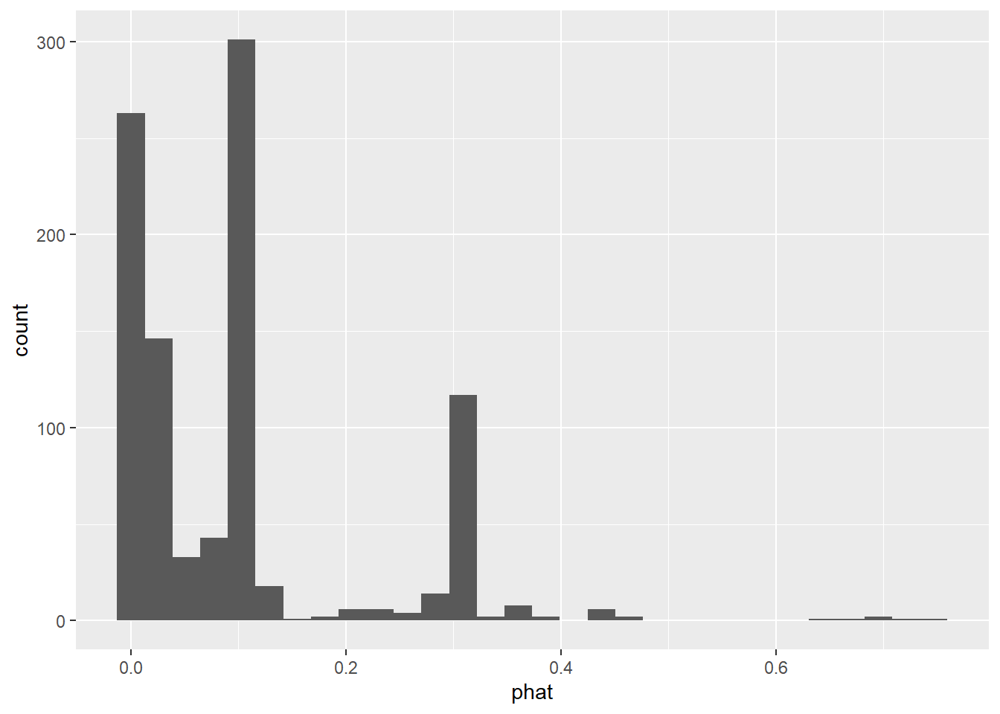

library(tidyverse)
# Classifier example libs.
library(openintro)
library(vcdExtra)
library(ggplot2)
library(tidyverse)
library(magrittr)
library(boot)
library(pROC)8 Model Eval
Learning Objectives
At the end of this week you should be able to:
- Discuss issues having to with making predictions of binary outcomes
- Describe methods for prediction of categorical and count data
- Describe the statistical concerns to be aware of in the big data setting
In R:
- Make predictions from generalized linear models
- Evaluate different models using cross validation methods
- Prepare and submit an R markdown script.
Task list
In order to achieve these learning outcomes, please make sure to complete the following:
Module 8 ReadingsLectures- Module 8 Lab
- Module 8 Homework
- R Quiz
- Content Quiz
- Discussion Wed
- Disc Sunday
8 Model Eval Lectures
Binary Classification
Looking at the email dataset and the binary classification problem.
- email dataset from openintro stats in mod 3
- 3921 emails in one account
- 21 variables for each email.
- spam or not prediction.
Simple start
- 74% training set.
- fit log reg using spam as response
- to_multiple as exp
- model is logit(p) = -2.1 -2.11 x multiple
- Back transforms the equation to find p of spam or not.
If an incoming email is addressed to multiple people, then the estimated probability that it’s spam is 0.015 and if it’s not addressed to multiple people, then the estimated probability that it’s spam is 0.109.
We don’t just want probs, we want to classify/predict.
- for ex, if prob > .5 it’s spam, or .75, whatever
- here the probs are low and those numbers won’t work.
- we need a better prediction model and
- we need to figure out a classification rule.
Comparing Predictions
Mean Squared Prediction Errors & Receiver Operating Characteristic Curves (ROC curves)
- good means predictions are right
- how good depends on situation. Health would need to be more strict than spam.
- pred error is difference yhat and y
- we held back 25% for that.
- MSPE = Mean Squared Prediction Error
\(MSPE = 1/m \sum{(\hat{y_i} −y_i)^2}\)
- m is the number of values in a validation dataset.
- For binary outcomes MSPE is prop of incorrect predictions, bc each squared pred err is zero or one.
- smaller error is a better model.
- We want to pick the model/classification rule combination that minimizes MSPE
ROC curves.
- ROC is a graphical tool to evaluate a pred model with different classification rules.
- false positive rate fpr is prob of predicting 1 when zero
- true pos rate tpr is prob of pred 1 when 1.
- we want to minimize fpr and max tpr.
- ROC is tpr ~ fpr
- 1 to 1 is even chance.
- more above the 1:1 line is better.
- the point furthest from the 1:1 line that maxes and mins the rates is the number above which we set the rule.
Specificity = 1 - fpr
sensitivity = tpr
- Specificity or sensitivity could be on the ROC curve instead. i.e. R does that.
Classifier Example
# ?email
names(email) [1] "spam" "to_multiple" "from" "cc" "sent_email"
[6] "time" "image" "attach" "dollar" "winner"
[11] "inherit" "viagra" "password" "num_char" "line_breaks"
[16] "format" "re_subj" "exclaim_subj" "urgent_subj" "exclaim_mess"
[21] "number" Training & Test Sets
Sample 75% of the email dataset, perform a simple logistic regression.
# simple log reg
(n <- dim(email)[1]) # num of obs in dataset[1] 3921(r <- round(n*.75)) # .75 for training data[1] 2941idx <- 1:n # index of all rows from 1 to n
nidx <- sample(idx,r,replace=F) # sample from index of .75
email75 <- email[nidx,] # set training
email25 <- email[-nidx,] # set test set
# set simple glm
pmod1 <- glm(spam~to_multiple,data=email75,family=binomial)
summary(pmod1)
Call:
glm(formula = spam ~ to_multiple, family = binomial, data = email75)
Coefficients:
Estimate Std. Error z value Pr(>|z|)
(Intercept) -2.13059 0.06535 -32.605 < 2e-16 ***
to_multiple1 -2.06768 0.38620 -5.354 8.61e-08 ***
---
Signif. codes: 0 '***' 0.001 '**' 0.01 '*' 0.05 '.' 0.1 ' ' 1
(Dispersion parameter for binomial family taken to be 1)
Null deviance: 1799.4 on 2940 degrees of freedom
Residual deviance: 1743.3 on 2939 degrees of freedom
AIC: 1747.3
Number of Fisher Scoring iterations: 6Predictions
Get predictions for the model;
pred <- predict.glm(pmod1,newdata = email25, type="link") # get predictions
phat <- plogis(pred) # get preds on probability scale. Now, we need a classifier rule to take these probabilities and turn them into 0’s and 1’s. Let’s just use:
ytilde <- ifelse(phat >= 0.50,1,0) # setting naive classifier rule
# and then calculate MSPE:
(MSPE1 <- mean((ytilde-(as.integer(email25$spam)-1))^2))[1] 0.1That’s actually not a bad mis-classification rate, but the reason is really that there are not that many spam emails!
(mean(as.integer(email25$spam)-1))[1] 0.1This is exactly the same as the MSPE, because our classification rule classified everything in email25 as non-spam! We are precisely wrong.
More Realistic Model
Now, lets’ look at a more realistic prediction model and recaclulate MSPE.
# setting a better model.
mod2 <- glm(spam~to_multiple+winner+format+re_subj+exclaim_subj+cc+attach+dollar+inherit+password,data=email75,family="binomial")
summary(mod2)
Call:
glm(formula = spam ~ to_multiple + winner + format + re_subj +
exclaim_subj + cc + attach + dollar + inherit + password,
family = "binomial", data = email75)
Coefficients:
Estimate Std. Error z value Pr(>|z|)
(Intercept) -0.81366 0.10307 -7.894 2.92e-15 ***
to_multiple1 -3.01139 0.40164 -7.498 6.49e-14 ***
winneryes 1.92416 0.38553 4.991 6.01e-07 ***
format1 -1.53514 0.14344 -10.702 < 2e-16 ***
re_subj1 -3.03040 0.42452 -7.138 9.44e-13 ***
exclaim_subj 0.04946 0.27455 0.180 0.85703
cc 0.01025 0.04709 0.218 0.82767
attach 0.21510 0.07075 3.040 0.00236 **
dollar -0.06688 0.02531 -2.642 0.00825 **
inherit 0.40171 0.18152 2.213 0.02690 *
password -0.84766 0.39093 -2.168 0.03013 *
---
Signif. codes: 0 '***' 0.001 '**' 0.01 '*' 0.05 '.' 0.1 ' ' 1
(Dispersion parameter for binomial family taken to be 1)
Null deviance: 1799.4 on 2940 degrees of freedom
Residual deviance: 1423.4 on 2930 degrees of freedom
AIC: 1445.4
Number of Fisher Scoring iterations: 7Many of the exp models are significant.
# predict with second model
pred <- predict.glm(mod2,newdata=email25,type="link")
# get it on prob scale.
email25$phat <- plogis(pred)
# looking at the predictions.
ggplot(email25,aes(phat)) + geom_histogram(bins = 30)
Before the highest phat was about .1. Here we’ve got a .8. That at least does predict some spam.
Now it looks like some of the predicted probabilities are fairly large, so let’s use the same classification rule we did above and recalculate MSPE:
ytilde <- ifelse(email25$phat >= 0.5,1,0)
(MSPE2 <- mean((ytilde-(as.integer(email25$spam)-1))^2))[1] 0.09795918Well…only a moderately better MSPE, but maybe we need a better classification rule. This is where looking at the ROC curve can help. We have a prediction model, and now we want to find the optimal classification rule.
ROC Curves
We’ll use the package pROC, so if you don’t have that installed you’ll have to get it.
# library(pROC)
# ?roc
roc(email25$spam,email25$phat,plot=TRUE)Setting levels: control = 0, case = 1Setting direction: controls < cases
Call:
roc.default(response = email25$spam, predictor = email25$phat, plot = TRUE)
Data: email25$phat in 882 controls (email25$spam 0) < 98 cases (email25$spam 1).
Area under the curve: 0.7982Specificity instead of fpr on the x axis flips the numbers to high to low. Sensitivity is == tpr.
Looking for a point where we min fpr and max tpr.
This seems to suggest that we use 0.60 as our cut-off for the classification rule:
ytilde2 <- ifelse(email25$phat > 0.6,1,0)
(MSPE3 <- mean((ytilde2-(as.integer(email25$spam)-1))^2))[1] 0.09693878This is just marginally better than our original cut-off of 0.5, but we’re not going to get much better using this prediction model.
Next Steps
In the lab for this module, you’ll look at finding other prediction models for the email data that might do a better job than this one did.
Cross Validation
k-fold cross validation and more than two categories.
- training and test sets are for cross validation.
- As in LR MSE, GLM MSPE is similar
- for k fold we split the data into k samples of roughly equal size.
When we split into 25:75 test:training. MSPE was .082.
- using cv.glm in the boot package we can do k-fold.
- for k = 10, we get .084, and for k = 5 it’s the same.
The real power comes from comparing models.
- comparing models by k = 10 shows the number of preds and MSPE going up together.
- Still need to consider parsimony and overfitting.
For more than 2 categories, like spam, not spam, and maybe.
- we need training data for this type of prediction.
- we would use multinomial log regs which is a generalization of binary logistic reg.
- or we could use machine learning.
Big Data Issues
Big p and big n
p is number of exp variables. n is the number of observations.
- big is in terms of p and n.
- genomics might have n = 10 and p = 200,000. That’s big data.
- weather over 30 years of monthly weather in 1km^2 grid can be terabytes.
When p is large compared to n.
- if p => n you should not fit a model, it will fit exactly.
- if p < n but close, there is still likely overfitting.
- don’t use all the preds, but model selection then becomes a process.
- Many of the same issues occur with cat vars.
When n is large:
- bigger sample doesn’t mean better.
- large n won’t improve inference if non-random
- won’t improve ability to make causal inference without randomization to treatments.
- won’t solve dependency issues.
- won’t solve missing data issues if non-random.
You can’t overcome lack of randomization. Randomness is more important than size.
- With large n, small effects can be statistically significant.
- Consider practical vs statistical significance.
- lm and glm require the data to be in memory.
- there are ways to swap out data and do it anyway.
Increasing sample size is often accompanied by increasingly complicated relationships. This is more a conceptual problem that it is computational. It’s hard for us to think about complicated relationships.
The data must be informative about the thing we are interested in, having more data won’t help if it’s the wrong data.
Steps to looking at big data
- look at a sample.
- find a way to get a more representative set out of the whole to look at your question of interest.
- analysis of a random sample can be used to make inference about the whole and the population.
- summarize some aspects of the data, but be careful about the perils of aggregation.
If you see a summary table created from any dataset, large or small, be sure to consider whether the counts in the table have been aggregated over another factor or set of factors and if those had been included, would the information in the summary be different?
Working with big data in R
This is 1 hour long. I am not going to try and do the whole thing here. I’ll just watch it later.
Quiz R
Quiz C
____END____
Quizzes
# Set the number of simulations (and different random seeds)
# to try. Don't pick a number that is much bigger than 10,000
# or it will take quite a long time and possibly crash your
# computer.
nSim <- 1000
# Create an empty vector (just a vector of zeroes) that will
# be used to store the p-values from each new simulation.
pvals <- rep(0, nSim)
# Set the sample size n.
n <- 1000000
for(i in 1:nSim){
# The lines below ('print(i)', etc.) are just to tell us how far
# through the nSim iterations we have gotten. This is
# slow with a large sample size because of the iterative
# nature of the glm solution.
if(i %% 20 == 0) print(i)
# For the ith simulation, we are using 'i' as the random seed,
# so the first simulation will use 1 as the random seed, the second
# will use 2, and so on. We could instead randomly generate new
# random seeds, but I wanted to keep this simple and easily
# reproducible.
set.seed(i)
# Generate the data Y and X as in the quiz question, with
# the designated sample size n.
Y <- rbinom(n, 1, 0.3)
X <- rnorm(n, 0, 1)
out <- glm(Y~X, family = binomial)
# Store the p-value resulting from the estimated logistic
# regression model. This can be found as the element in row 2,
# column 4 of the 'coefficients' object of the summary output.
pvals[i] <- summary(out)$coeff[2,4]
}
# Count how many of the resulting p-values are less than
# 0.05. Here we show several ways to do that. First, we
# use the 'table' function to tabulate how many of the p-values
# were <= 0.05, and how many were > 0.05. A 'TRUE' value means
# the p-value was <= 0.05, while a 'FALSE' value means the p-value
# was > 0.05.
table(pvals <= 0.05)
## Output:
## -------
## FALSE TRUE
## 952 48
# Another way of counting how many p-values are <= 0.05. Note that
# R treats 'TRUE' as a 1 and 'FALSE' as a 0, so when we add up a
# vector of 'TRUE's and 'FALSE's, we are just counting how many 'TRUE's
# there were.
sum(pvals <= 0.05)
## Output:
## -------
## [1] 48
# Now to calculate the proportion of p-values <= 0.05, we just divide
# the number that were <= 0.05 by the total number of simulations we
# did:
sum(pvals <= 0.05)/nSim
## Output:
## -------
## [1] 0.048
# Or we could do that in one step using the 'mean' function, since
# the mean of a vector of 1's and 0's is just the proportion of 1's:
mean(pvals <= 0.05)
## Output:
## -------
## [1] 0.048
# Same thing, but for a smaller significance level (0.006 instead of
# 0.05)
table(pvals <= 0.006)
## Output:
## -------
## FALSE TRUE
## 994 6
mean(pvals <= 0.006)
## Output:
## -------
## [1] 0.006
##################################################
# Repeat all of the above, but with n = 50 instead of n = 1000000
nSim <- 1000
pvals <- rep(0, nSim)
n <- 50
for(i in 1:nSim){
if(i %% 20 == 0) print(i)
set.seed(i)
Y <- rbinom(n, 1, 0.3)
X <- rnorm(n, 0, 1)
out <- glm(Y~X, family = binomial)
pvals[i] <- summary(out)$coeff[2,4]
}
table(pvals <= 0.05)
mean(pvals <= 0.05)
table(pvals <= 0.006)
mean(pvals <= 0.006)
##################################################
# Consider a single example with n = 50:
set.seed(304)
Y <- rbinom(50, 1, 0.3)
X <- rnorm(50, 0, 1)
out <- glm(Y~X, family = binomial)
summary(out)